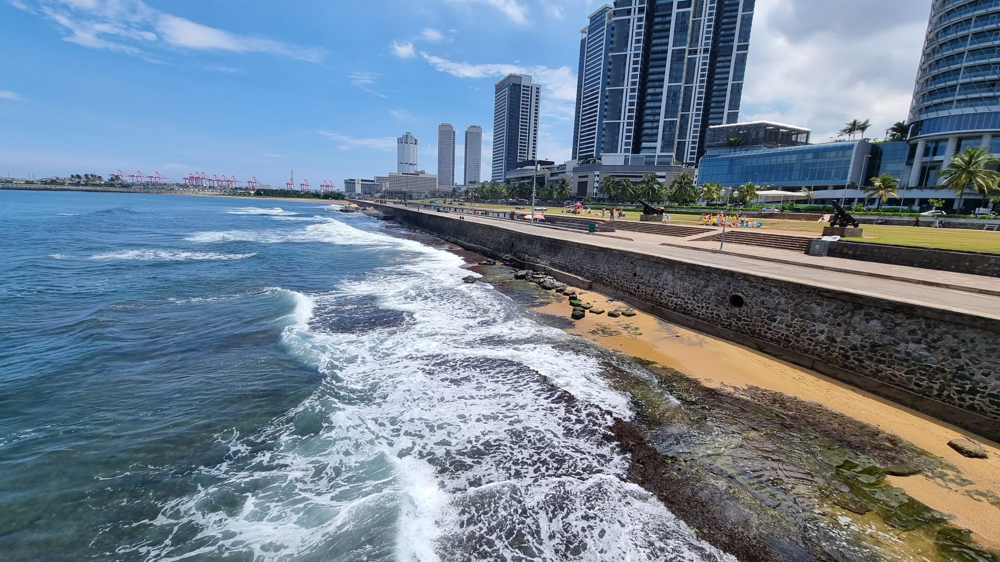
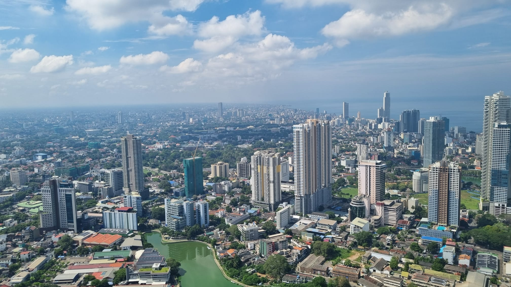
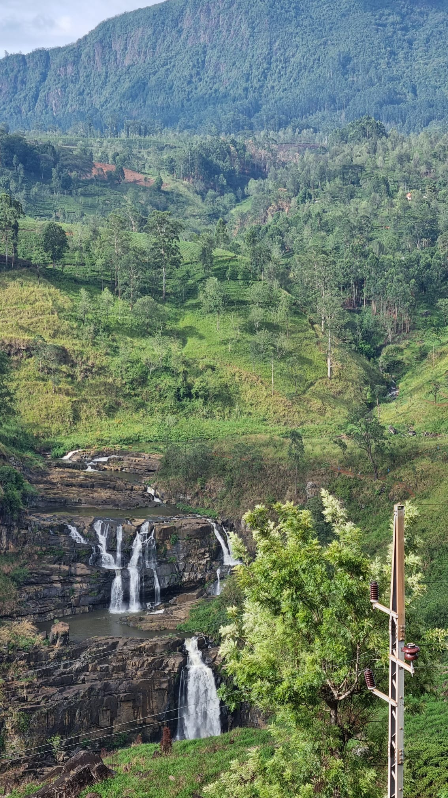
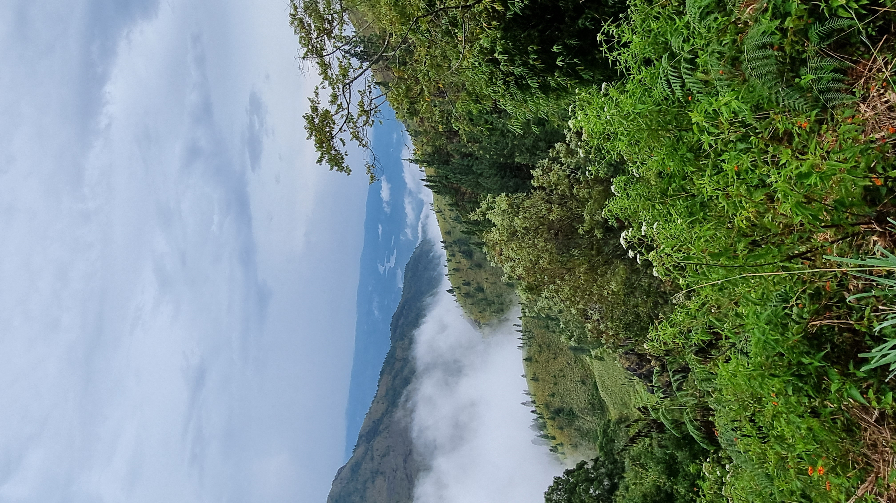

Sri Lanka is a place which I love going to. Not because it’s my country, but because it is a place where I can create lifelong memories. A destination with so many cool places to go to which is why I’ll be sharing my top 5 favorite places to go to
Number 1: Galle Face Green
The Galle Face Green is the scenic destination for Colombo’s coastline, stretching for nearly half a kilometre. It is buffeted by the skyscrapers behind it and the Indian ocean on the on the front, making it a perfect place to catch the setting sun. High-flying kites and the smell of traditional Sri Lankan snacks make this one of the greatest sight seeing stop for many locals, tourists and children. The Galle Face Front might just be one of the most iconic locations of Colombo city.

Number 2: Lotus Tower observation deck
Towering above every other sky scaper and apartment residence in Colombo city, the Lotus Tower stands as the landmark that defines Sri Lanka. In every angle of Colombo, you can spot this famous tower. From the observation deck up at the top, you can see the whole of Colombo from the Port City on one side all the way to the distant mountains in the horizon. The feeling of being at the top of the world is made real here.

Number 3: Haputhale
Situated in highlands of central Sri Lanka, Haputale is a highland city that overlooks the lower plains of Sri Lanka. The breathtaking views paired with the tranquilness of a temple create an environment where hiking flourishes. There are many scenic trails ranging from short walks to multi day hikes that are accessible from Haputhale city which you can take to view the beauty of the tea plantations and forests.

Number 4: St Clairs Waterfall
Known as the little niagara of Sri Lanka, St Clair’s waterfall is one the widest waterfalls in Sri Lanka. Set against the backdrop of lush green tea plantations of the Nuwara Eliya district, the waterfall drops from the highest point of the hill all the way down to the bottom of the valley. The cascading water makes for some picture perfect photographs. The environment surrounding the waterfall also makes this location a perfect spot to grab a break.

Number 5: Bakers Bend
Baker’s Bend is a road which dramatically curves around the side of a mountain at an approximate elevation of 1500m. This bend offers some of the most stunning panoramic views of the surrounding tea estates, pine forests and misty ridgelines of nearby mountains. Standing on the ledge gives a sense of euphoria as you look down towards the Southern Lakes, making this one of the hidden scenic wonders of Sri Lanka
